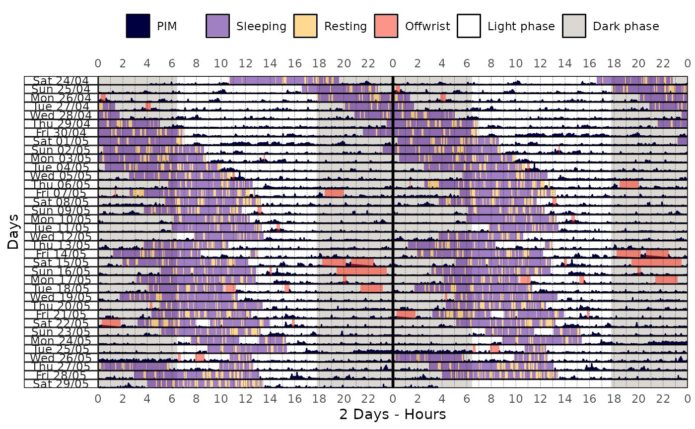
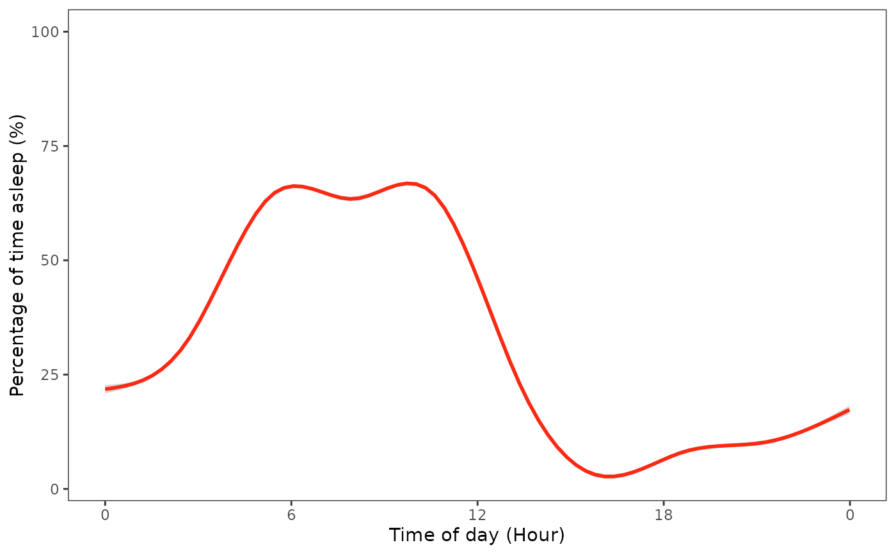

state_prop() computes the proportion of time spent in one or more specified
states from a tsibble object. It quantifies the
fraction of time each day (or epoch) that the subject spends in the target
state(s), such as sleeping or awake, across the observed period.
Arguments
- data
A
tsibbleobject.- state_col
(optional) A string indicating which column of
datahave the states data (default:"state").- state_values
(optional) An
integerishvector indicating which state values are considered as the target state(s) for calculating the proportion (default:1).
Value
A tsibble object with the following columns:
time: Anhmsobject representing the time of day.state: Alistwith afactorof the state at each time point, indicating whether it is the target state or not.prop: Anumericvector representing the proportion of time spent in the target state at each time point. This value is calculated as the number of occurrences of the target state divided by the total number of observations at that time point.
See also
Other sleep statistics functions:
sri()
Examples
library(curl)
library(dplyr)
library(ggplot2)
library(scales)
if (has_internet()) {
file <- get_from_zenodo(
doi = "10.5281/zenodo.4898822",
dir = tempdir(),
file = "processed.txt"
)
data <- read_acttrust(file, tz = "America/Sao_Paulo")
state_prop_data <- data |> state_prop(state_values = 1) # Sleeping state
state_prop_data |> print()
state_prop_data |> pull(prop) |> summary() |> print()
data |>
actogram(
col = "pim",
days = -1,
latitude = -23.55065,
longitude = -46.63338,
double_plot = TRUE
)
state_prop_data |>
mutate(per = prop * 100) |>
ggplot(ggplot2::aes(x = time, y = per)) +
geom_smooth(color = "#FC2913") +
labs(
x = "Time of day (Hour)",
y = "Percentage of time asleep (%)",
) +
scale_x_time(
breaks = breaks_width("6 hours"),
labels = label_time("%-H") # Use "%#H" for Windows
) +
scale_y_continuous(limits = c(NA, 100)) +
actverse:::get_actverse_theme()
}
#> ℹ Reading data
#> ✔ Reading data [140ms]
#>
#> ℹ Tidying data
#> ✔ Tidying data [406ms]
#>
#> ℹ Validating data
#> ℹ Found 2 gap in the time series: 2021-04-26 03:14:00/2021-04-26 03:14:00 and 2021-05-01 17:34:00/2021-05-01 17:34:00 (showing up to a total of 5 values).
#> ℹ Validating data
#> ℹ Found 21 offwrist blocks in the time series. All values were set as NA.
#> ℹ Validating data
#> ✔ Validating data [18.9s]
#>
#> # A tsibble: 1,440 x 3 [1m]
#> time state prop
#> <time> <list> <dbl>
#> 1 00'00" <fct [36]> 0.167
#> 2 01'00" <fct [36]> 0.167
#> 3 02'00" <fct [36]> 0.167
#> 4 03'00" <fct [36]> 0.167
#> 5 04'00" <fct [36]> 0.167
#> 6 05'00" <fct [36]> 0.139
#> 7 06'00" <fct [36]> 0.139
#> 8 07'00" <fct [36]> 0.139
#> 9 08'00" <fct [36]> 0.139
#> 10 09'00" <fct [36]> 0.167
#> # ℹ 1,430 more rows
#> Min. 1st Qu. Median Mean 3rd Qu. Max.
#> 0.00000 0.08333 0.19444 0.25408 0.44444 0.66667

#> `geom_smooth()` using method = 'gam' and formula = 'y ~ s(x, bs = "cs")'
